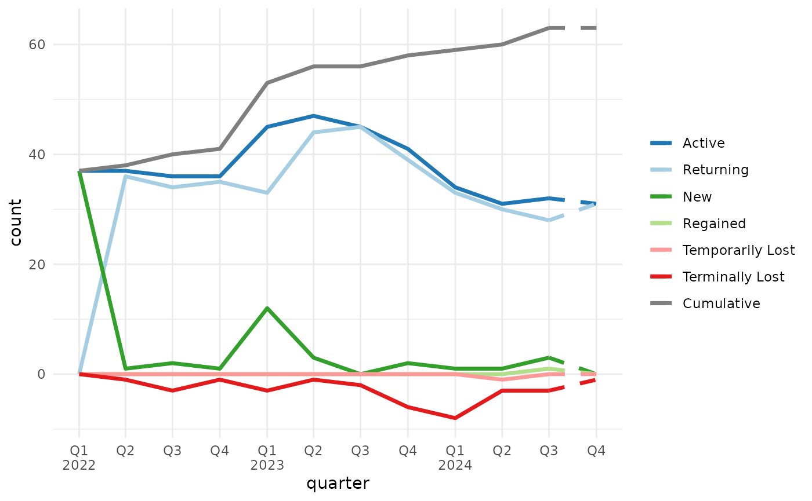

Introduction
Normalize logical columns
For data frames or tibbles that have character or factor columns
storing logical data, as may happen when reading from a database, CSV,
or Excel file, use normalize_logicals() to find and convert
these columns to logical type. This is a nice one-liner in a
dplyr pipe
library(dplyr, warn.conflicts = FALSE)
ugly_data <- tibble(
logical_char = c("T", "F", "T"),
logical_factor = factor(c("TRUE", "FALSE", "TRUE")),
non_logical_char = c("a", "b", "c"),
non_logical_factor = factor(c("x", "y", "z")),
mixed_char = c("T", "F", "a"),
mixed_factor = factor(c("TRUE", "FALSE", "x")),
numeric_col = c(1.1, 2.2, 3.3)
)
ugly_data
#> # A tibble: 3 × 7
#> logical_char logical_factor non_logical_char non_logical_factor mixed_char
#> <chr> <fct> <chr> <fct> <chr>
#> 1 T TRUE a x T
#> 2 F FALSE b y F
#> 3 T TRUE c z a
#> # ℹ 2 more variables: mixed_factor <fct>, numeric_col <dbl>
df <- ugly_data |> normalize_logicals()
#> Converted "logical_char" and "logical_factor" columns to
#> logical.
df
#> # A tibble: 3 × 7
#> logical_char logical_factor non_logical_char non_logical_factor mixed_char
#> <lgl> <lgl> <chr> <fct> <chr>
#> 1 TRUE TRUE a x T
#> 2 FALSE FALSE b y F
#> 3 TRUE TRUE c z a
#> # ℹ 2 more variables: mixed_factor <fct>, numeric_col <dbl>Auto-formatted datattables
auto_dt() uses guess_col_fmts() to
determine the format of each column. You can provide
pct_flags and curr_flags (character vectors)
if you need to control the list of “signal” words that indicate a column
is a percentage or currency.
tribble(
~product, ~weight, ~dollaz_earned, ~growth_pct,
"Widget A", 13.53, 1023.21, 0.051,
"Widget B", 22.61, 150.24, 0.103,
"Widget C", 40.54, 502.26, 0.021,
"Widget D", 34.21, 2000.95, 0.154
) |>
mutate(product = as.factor(product)) |>
auto_dt(numeric_digits = 1, pct_digits = 0, curr_flags = c("revenue", "dollaz"))Quarterly breaks and labels
scales::label_date_short() is a great function for
labeling dates in ggplot2, but unfortunately it can’t
support quarterly breaks and labels out of the box.
mcrutils provides a set of functions to create quarterly
breaks and labels for date scales in ggplot2. The
breaks_quarters() function generates breaks for quarters,
and label_quarters_short() generates minimal labels for
these breaks in a two-line format (like
scales::label_date_short()), labeling every quarter, but
only including the year when it changes from the previous label.
library(ggplot2)
economics |>
filter(date >= "2005-02-01", date <= "2007-03-01") |>
ggplot(aes(date, pce)) +
geom_line() +
scale_x_date(
breaks = breaks_quarters(),
labels = label_quarters_short()
) +
labs(title="Automatic Quarterly Breaks",
subtitle ="with concise labels") +
theme(panel.grid.minor.x = element_blank())The automatic version of breaks_quarters() tries to
return a reasonable number of breaks over a wide range of dates,
down-sampling to semesters and years as needed.
economics |>
filter(date >= "2005-05-01", date <= "2009-03-01") |>
ggplot(aes(date, pce)) +
geom_line() +
scale_x_date(
breaks = breaks_quarters(),
labels = label_quarters_short()
) +
labs(title="Switching to semesters for longer ranges",
subtitle = "always labelling Q1/Q3, never Q2/Q4") +
theme(panel.grid.minor.x = element_blank())
economics |>
filter(date >= "2000-05-01", date <= "2010-03-01") |>
ggplot(aes(date, pce)) +
geom_line() +
scale_x_date(
breaks = breaks_quarters(),
labels = label_quarters_short()
) +
labs(title="Switching to yearly for very long ranges",
subtitle = "rather silly") +
theme(panel.grid.minor.x = element_blank())With very long date ranges like this, you are likely better off
switching from these quarterly functions to the more standard date
breaks and labels in ggplot2.
You can force a fixed break width if quarters are desired regardless of the date range.
economics |>
filter(date >= "2005-02-01", date <= "2008-12-01") |>
ggplot(aes(date, pce)) +
geom_line() +
scale_x_date(
breaks = breaks_quarters(width = "1 quarter"),
labels = label_quarters_short()
) +
labs(title="Fixed quarterly breaks") +
theme(panel.grid.minor.x = element_blank())
Year-to-date helpers
mcrutils provides a handful functions that can be
helpful in creating year-to-date analyses
With ytd_bounds(), quickly find the date bounds of the
latest year-to-date period in vector of dates, possibly spanning
multiple years:
c(
"2023-01-01", "2023-06-15", "2023-12-31",
"2024-01-01", "2024-03-15", "2024-07-15"
) |>
as.Date() |>
ytd_bounds()
#> [1] "2024-01-01" "2024-07-15"is_ytd_comparable() is a logical vector that indicates
whether the dates in a vector are within a year-to-date period relative
to a given end_date.
Below we have 2.5 years of historical sales data ending on June 1, 2025. How were the sales in the comparable period of 2024 and 2023?
set.seed(123)
sales <- data.frame(
date = seq(
to = as.Date("2025-06-01"),
by = "month",
length.out = 30
),
amount = rpois(30, lambda = 100)
)
head(sales)
#> date amount
#> 1 2023-01-01 94
#> 2 2023-02-01 111
#> 3 2023-03-01 83
#> 4 2023-04-01 101
#> 5 2023-05-01 117
#> 6 2023-06-01 104
sales |>
group_by(year = lubridate::year(date)) |>
summarise(annual_sales = sum(amount))
#> # A tibble: 3 × 2
#> year annual_sales
#> <dbl> <int>
#> 1 2023 1199
#> 2 2024 1166
#> 3 2025 600How were the year-to-date sales in the comparable period of 2024 and 2023?
(bounds <- ytd_bounds(sales$date))
#> [1] "2025-01-01" "2025-06-01"
sales |>
filter(is_ytd_comparable(date, max(bounds))) |>
group_by(year = lubridate::year(date)) |>
summarise(ytd_sales = sum(amount))
#> # A tibble: 3 × 2
#> year ytd_sales
#> <dbl> <int>
#> 1 2023 610
#> 2 2024 594
#> 3 2025 600With py_dates() you can rollback a vector of dates to
the same period in the previous year, moving any fictitious dates to the
prior valid day.